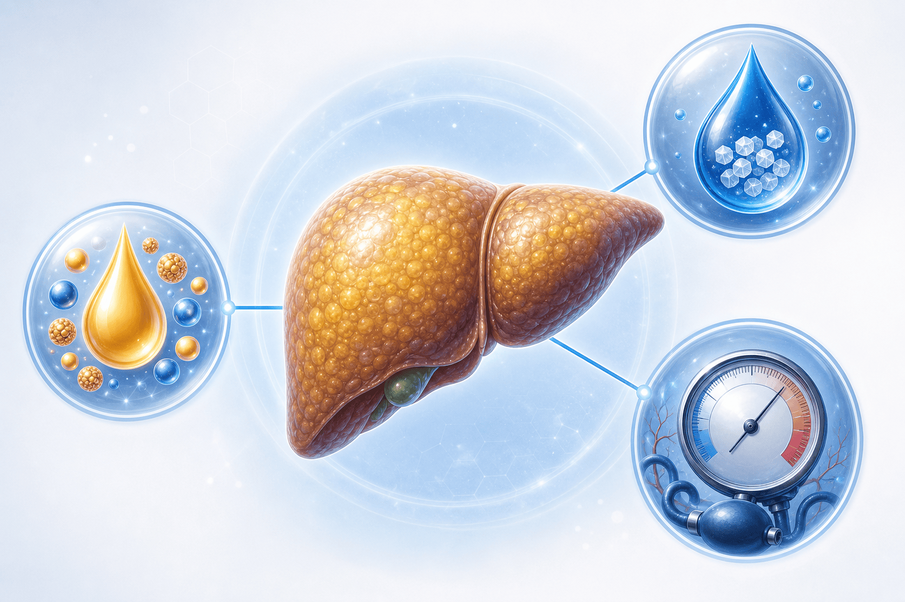
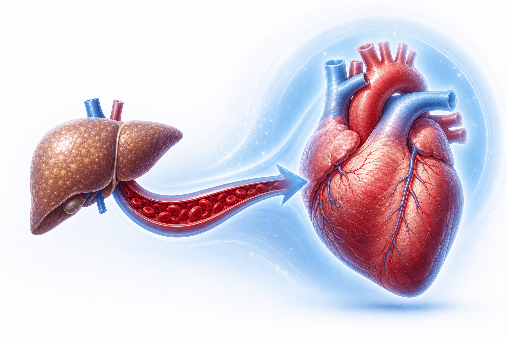
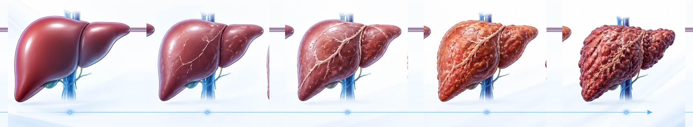
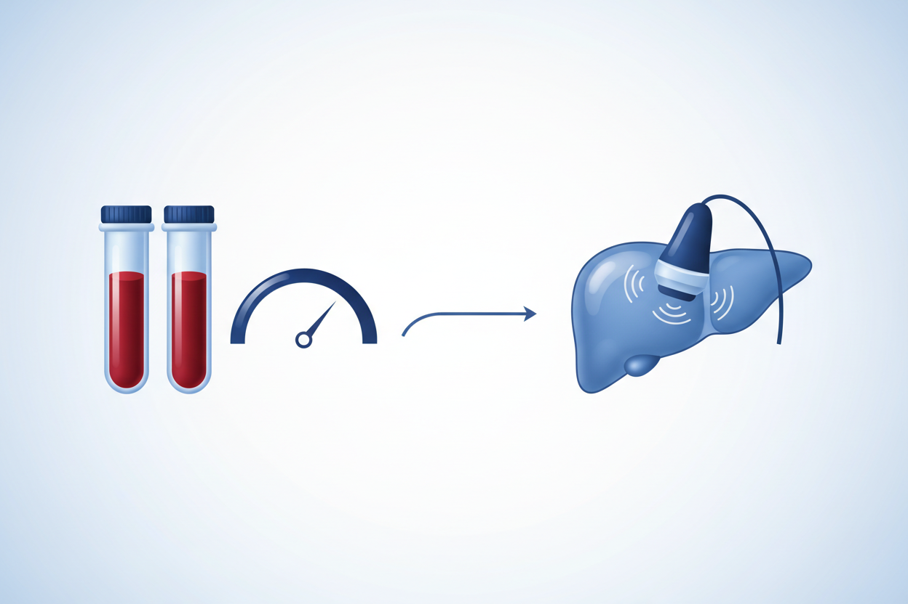

지방간(MASLD),
단순히 "살찐 간"이 아니라 대사질환입니다
MASLD(대사이상 지방간질환) — 당뇨·고혈압·이상지질혈증과 한 묶음인 대사 문제입니다. 가장 위험한 건 간이 아니라 심장이고, 예후를 정하는 건 지방의 양이 아니라 흉터(섬유화) 단계입니다. 그리고 되돌릴 수 있습니다.
이름이 바뀐 이유 — NAFLD에서 MASLD로
지방간은 당뇨·고혈압·이상지질혈증과 한 묶음의 대사질환이라는 본질을 담아 이름이 바뀌었습니다

2023년 국제 합의로 '비알코올성 지방간(NAFLD)'이 MASLD(대사이상 지방간질환)로 바뀌었습니다.
바뀐 이유는 두 가지입니다. ① '알코올 아님'·'지방'이라는 낙인을 제거하고, ② 단순히 다른 원인을 배제해서 붙이는 진단이 아니라 '대사 문제가 본질'이라는 점을 이름에 담기 위해서입니다. 질환 자체는 거의 같아서 기존 환자 대부분이 그대로 해당됩니다.
얼마나 흔한가 · 어떻게 진단하나
간에 지방이 있고 대사위험인자 한 가지만 있어도 진단됩니다 — 그래서 문턱이 낮습니다
1명
흔한 대사질환입니다
동반 비율이 더 높습니다
단 1개만 있어도 진단
가장 위험한 건 간이 아니라 — 심장입니다
지방간 환자에서 사망 원인 1위는 심혈관질환입니다 — 지방간 진단은 곧 '심혈관 경고등'입니다

일반적인 지방간 환자의 사망 원인은 심혈관질환 > 간외 암 > 간 질환 순서입니다.
즉 지방간을 진단받았다는 것은 심장·혈관에 빨간불이 켜졌다는 신호입니다. 그래서 가장 먼저 챙겨야 할 것은 간 자체보다 혈압·혈당·콜레스테롤·체중 관리입니다. 필요하면 스타틴 같은 약으로 콜레스테롤도 적극적으로 관리합니다.
예후를 정하는 건 — '흉터(섬유화)' 단계입니다
지방의 양이나 염증보다, 간이 얼마나 굳었는지(F0~F4)가 수명을 좌우합니다

(정상)
흉터
흉터
흉터 (위험↑)
(위험 급등)
검사는 간단한 2단계입니다
먼저 피검사(FIB-4)로 위험을 거르고, 필요하면 탄성 초음파(SWE)로 간의 굳기를 잽니다

흉터 위험은 피검사 → 탄성 초음파 순서의 2단계로 확인합니다.
추적은 같은 기기로, 검사 전 4시간 공복으로 합니다.
되돌릴 수 있습니다 — 생활습관이 1차 치료
체중을 7~10% 빼고 식사·운동을 바꾸면 지방간염과 흉터가 호전될 수 있습니다
음주량에 따른 분류 — MASLD와 MetALD
술을 어느 정도 마시느냐에 따라 분류가 갈리므로, 정확한 음주 문진이 중요합니다
- 대사 문제가 주된 원인인 지방간입니다
- 음주가 적은(기준 이하) 범위에 해당합니다
- 치료의 중심은 체중감량·대사조절입니다
- 그래도 술은 줄일수록 간에 도움이 됩니다
- 대사 문제에 알코올 영향이 함께 작용하는 구간
- 경계: 남 하루 30g(소주 약 반병)·여 20g 초과
- 이 구간부터는 알코올의 영향이 커집니다
- 정확한 음주량 문진이 분류와 치료에 중요합니다
약은 있나요?
미국은 2종이 승인됐지만 국내는 아직 '지방간염 전용 약'이 미허가입니다 — 핵심은 여전히 체중·대사 관리
(resmetirom)
(비경변)
(세마글루티드 2.4mg)
(비경변)
간암 검진은 '간경화'부터 시작합니다
흉터 단계에 따라 검진 방법이 달라집니다 — 흉터가 가벼우면 피검사로 위험만 선별합니다
오늘 꼭 기억할 핵심 8가지
지방간(MASLD)을 바르게 이해하고 관리하기 위한 환자 핵심 정리
지방간 = 심장 경고등,
흉터 단계가 중요하고 — 되돌릴 수 있습니다
"지방간은 단순히 살찐 간이 아니라 대사질환이에요. 체중을 7~10% 빼고 혈압·혈당·콜레스테롤을 함께 관리하면 흉터도 좋아질 수 있어요. 궁금한 점은 언제든 문의해 주세요."
광교중앙로 298, 4층
토요일 08:30~13:30
같은 자료를 다시 볼 수 있어요